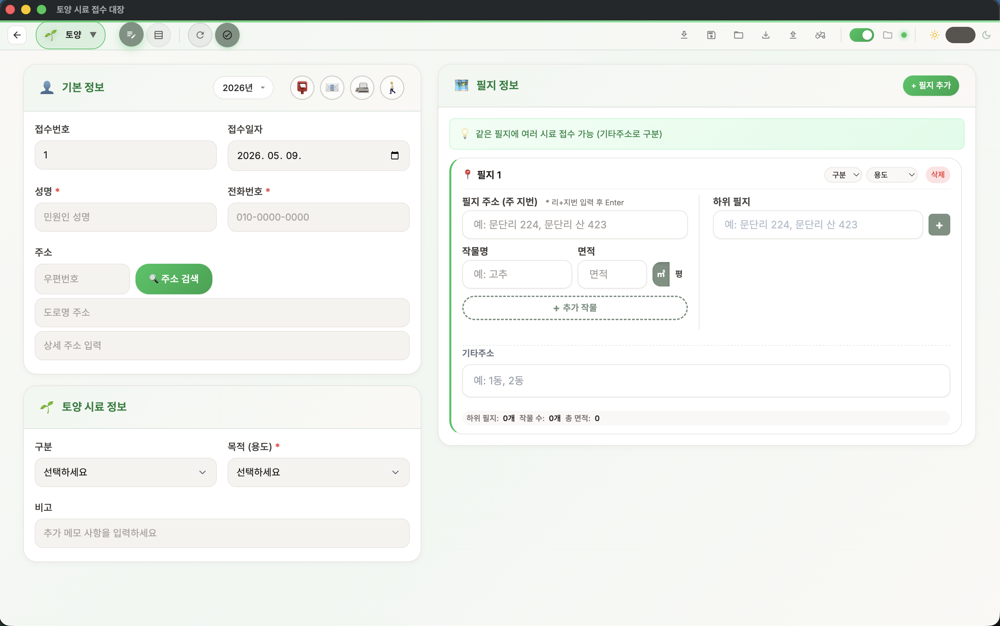
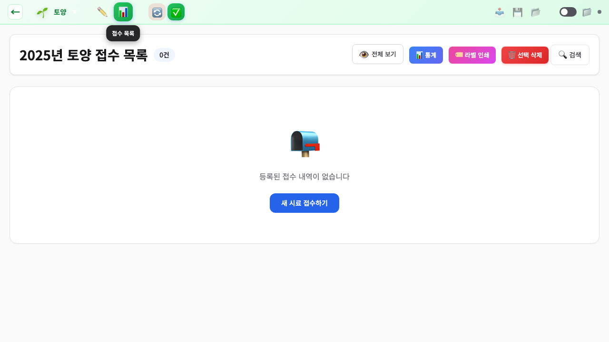
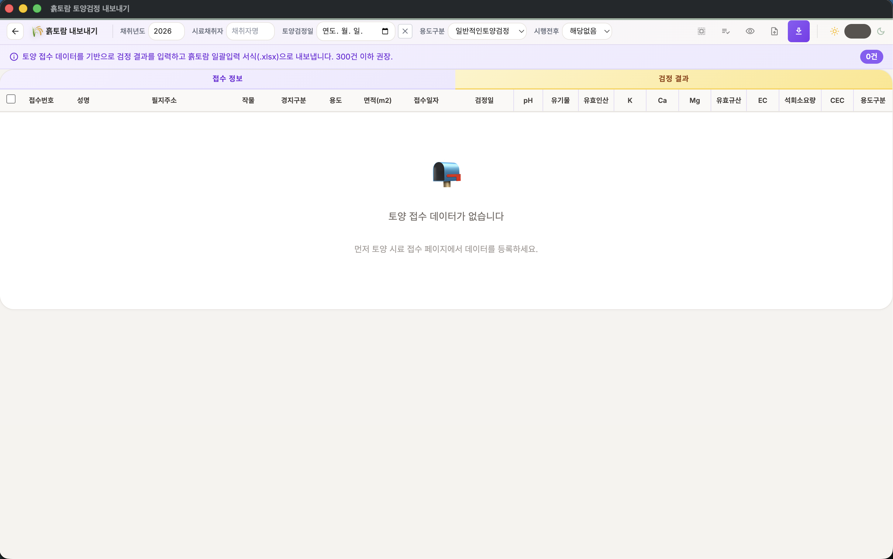

🏠 1. 시작하기
토양 시료 접수 대장은 봉화군농업기술센터 안전성분석센터의 토양 분석 전용 시료 접수·관리 프로그램입니다. 데스크톱 앱(Electron)과 웹 브라우저 두 가지 방식으로 사용할 수 있습니다.
앱 실행
바탕화면의 토양 시료 접수 대장 아이콘을 더블 클릭하여 실행합니다. 설치 파일(.exe)로 설치한 경우 시작 메뉴에서도 실행할 수 있습니다.
메인 화면
프로그램을 실행하면 토양 카드와 토양 통계 패널이 가운데 정렬되어 표시됩니다. 토양 카드를 눌러 시료 접수 화면으로 이동합니다.

📊 토양 통계 패널 NEW
메인 화면 오른쪽에 올해 등록된 토양 시료 통계가 한눈에 표시됩니다. 별도 조회 없이 진행 상황을 즉시 파악할 수 있습니다.
| 지표 | 설명 |
|---|---|
| 올해 접수 | 현재 연도(예: 2026년)에 등록된 전체 시료 건수 |
| 이번 달 접수 | 접수일자 기준 이번 달 등록 건수 |
| 완료율 | 완료 토글이 켜진 비율(%) — 막대 그래프로 시각화 |
| 미완료 | 완료되지 않은 본필지 건수 (하위필지 -1, -2는 제외) |
ℹ️ 데이터가 없을 때
등록된 토양 시료가 없으면 통계 대신 "아직 등록된 토양 시료가 없습니다" 안내가 표시됩니다. 시료를 등록하면 자동으로 수치가 채워집니다.
🌱 토양
논, 밭, 과수, 시설 토양 분석. 필지별 작물·면적, 본필지/하위필지 관리
🌱 흙토람 결과 가져오기
토양 페이지 툴바의 흙토람 버튼으로 진입. 엑셀/텍스트 업로드로 검정결과를 자동 매핑하여 일괄 입력
🏷️ 라벨 인쇄
검사 결과 발송용 우편 주소 라벨 인쇄
🌙 다크 모드
메인 화면 오른쪽 상단의 달 아이콘을 클릭하면 다크 모드로 전환됩니다. 어두운 환경에서 눈의 피로를 줄여줍니다. 설정은 자동 저장되어 다음 실행 시에도 유지됩니다.
🔄 전체 동기화
메인 화면의 전체 동기화 버튼을 클릭하면 Firebase에 저장된 모든 시료 데이터를 한 번에 내려받을 수 있습니다. 새 PC에서 처음 사용할 때 유용합니다.
ℹ️ 전체 동기화 사용 시기
전체 동기화는 Firebase 설정이 완료된 상태에서만 동작합니다. 설정 방법은 7. 클라우드 동기화 섹션을 참고하세요.
📝 2. 토양 시료 접수하기
메인 화면의 토양 카드를 클릭하면 접수 화면으로 이동합니다. 왼쪽에 기본/시료 정보, 오른쪽에 필지 정보를 입력합니다.

접수 순서
- 접수번호는 연도-일련번호 형식으로 자동 생성됩니다 (예: 2026-0001)
- 접수일자를 선택합니다 (기본값: 오늘 날짜)
- 수령방법을 아이콘 버튼으로 선택합니다 (우편, 이메일, 팩스, 직접방문)
- 성명과 전화번호를 입력합니다
- 전화번호는 자동으로 000-0000-0000 형식으로 포맷됩니다
- 주소를 입력합니다
- "주소 검색" 버튼을 클릭하면 우편번호 검색 창이 열립니다
- 도로명이나 지번을 검색하여 주소를 선택하면 자동 입력됩니다
- 구분을 선택합니다 (논, 밭, 과수, 시설, 임야, 성토)
- 목적(용도)을 선택합니다 (일반재배, 무농약, 유기, GAP, 저탄소) - 필수 항목
- 오른쪽의 "필지 추가" 버튼을 클릭하여 필지 정보를 입력합니다
- 등록 버튼을 클릭하여 접수를 완료합니다
필지 정보 입력
하나의 접수 건에 여러 필지를 등록할 수 있습니다. "+ 필지 추가" 버튼을 눌러 필지를 하나씩 추가하세요. 필지마다 본필지와 하위필지(같은 필지에 여러 시료가 접수될 때)를 별도로 입력할 수 있습니다.
| 항목 | 설명 |
|---|---|
| 필지 주소 (주 지번) | 리·지번 입력 후 Enter (예: 문단리 224, 문단리 산 423). "봉화"를 입력하면 봉화군 읍면리가 자동완성됩니다. |
| 하위 필지 | 같은 필지에 추가 시료가 있을 때 입력. 접수번호가 자동으로 -1, -2 식으로 부여됩니다. |
| 작물명 | 예: 고추. "+ 추가 작물" 버튼으로 같은 필지에 여러 작물을 등록할 수 있습니다. |
| 면적 | 숫자만 입력하면 천 단위 콤마가 자동 적용됩니다 (단위: 평). |
| 기타 주소 | 예: 1동, 2동 등 동·번지 외 추가 정보를 메모로 입력할 수 있습니다. |
ℹ️ 본필지 vs 하위필지
접수번호가 503은 본필지, 503-1·503-2는 하위필지입니다. 완료 토글은 본필지·하위필지가 그룹으로 함께 동작하며, 메인 화면 통계의 "미완료" 카운트는 본필지만 집계합니다.
💡 초기화 버튼
"초기화" 버튼을 클릭하면 폼이 비워지지만, 접수번호와 접수일자는 유지됩니다. 같은 날 여러 건을 연속 접수할 때 편리합니다.
📋 3. 접수 목록 조회
상단 네비게이션의 "목록" 버튼을 클릭하면 접수된 시료 목록을 확인할 수 있습니다.

🌱 4. 흙토람 결과 가져오기 NEW
토양 페이지 상단 툴바의 흙토람 버튼을 클릭하면 흙토람(농촌진흥청 토양환경정보시스템) 검정결과를 한 번에 가져올 수 있는 화면이 열립니다. 엑셀 파일 또는 텍스트 붙여넣기 두 가지 방식 모두 지원합니다.

ℹ️ 먼저 토양 시료를 등록하세요
흙토람 결과는 이미 등록된 토양 시료(접수번호 기준)에 매핑됩니다. 시료가 없는 상태에서는 위 화면처럼 "토양 접수 데이터가 없습니다" 안내가 표시됩니다.
📊 엑셀로 결과 입력
토양 페이지에서 흙토람으로 진입한 뒤 "엑셀로 결과 입력" 버튼을 누르면 다음 모달이 열립니다.

입력 순서
- 1. 엑셀 데이터 입력
- 엑셀 파일 업로드 (권장): .xlsx / .xls 파일을 드래그앤드롭하거나 [파일 선택] 버튼으로 업로드. 시트 자동 분리, 빈 셀 정확히 인식.
- 텍스트 붙여넣기: 엑셀에서 복사한 표를 그대로 붙여넣기.
- 2. 매칭 키 컬럼 (시료번호): 엑셀의 어느 컬럼이 시료의 접수번호와 매칭되는지 선택합니다.
- 3. 흙토람 필드 매핑: pH, 유효인산, 치환성칼슘/마그네슘/칼륨, 유기물, 유효규산, EC, 석회요구량, CEC 등 검정 항목을 엑셀 컬럼과 연결합니다. "자동 매핑 추정" 버튼을 누르면 헤더 패턴을 기반으로 30+ 항목을 자동 인식합니다. 항목별 소수점 자릿수도 지정할 수 있습니다.
- 4. 옵션
- 빈 셀은 덮어쓰지 않음 (권장): 엑셀의 빈 칸은 무시.
- 본필지 결과를 하위필지(-1, -2)에 자동 동기화: 같은 접수번호 그룹에 결과 자동 반영.
- 기존값이 있을 때: 미리보기/항상 덮어쓰기/빈 칸만 채우기/기존값 유지 4가지 정책 선택.
- 5. 미리보기: 매칭 키와 매핑을 모두 지정하면 미리보기가 표시됩니다. ✅매칭 / ⚠️미매칭 / 🔵충돌 / ⚠️범위초과 통계와 셀 단위 변경 표시를 확인할 수 있습니다.
- 확인 후 저장 버튼을 누르면 토양 시료에 결과가 일괄 반영됩니다.
💡 미매칭 행 다운로드
접수번호가 토양 시료 목록에 없는 행은 자동으로 미매칭 처리됩니다. 미리보기 화면 하단의 "미매칭 CSV" 버튼으로 해당 행만 별도 다운로드할 수 있습니다 (UTF-8 BOM 포함, Excel 한글 인식).
ℹ️ 안전 한도
엑셀 파일은 50MB hard limit, XSS 방지, 매칭 키 중복 경고, 모드 격리 등 안전 가드가 적용되어 있습니다.
연도별 조회
상단의 연도 드롭다운에서 원하는 연도를 선택하면 해당 연도의 데이터만 표시됩니다.
필터
| 필터 종류 | 옵션 |
|---|---|
| 용도 필터 | 전체 / 일반재배 / 무농약 / 유기 / GAP / 저탄소 |
| 상태 필터 | 전체 / 미완료 / 완료 |
🔍 고급 검색
검색 아이콘 버튼을 클릭하면 고급 검색 모달이 열립니다.
검색 조건
- 접수일자 범위 - 시작일과 종료일을 지정하여 기간 내 데이터만 검색
- 성명 - 의뢰인 이름으로 검색
- 접수번호 범위 - 시작 번호와 종료 번호 지정
- 지번 주소 - 리 이름이나 지번으로 검색
테이블 보기 옵션
기본 보기: 주요 컬럼만 표시하여 깔끔하게 조회합니다.
전체 보기: 우편번호, 비고, 발송일자 등 모든 컬럼을 표시합니다.
페이지네이션
데이터가 많을 때 페이지를 나누어 표시합니다. 페이지당 항목 수를 50건 / 100건 / 200건 / 500건 중 선택할 수 있습니다.
완료 체크
각 행의 체크박스를 클릭하면 해당 시료의 검사 완료 상태를 표시할 수 있습니다. 상태 필터와 함께 사용하면 미완료 건만 조회할 수 있습니다.
💾 5. 데이터 관리
수정 및 삭제
각 행의 수정 버튼을 클릭하면 접수 폼에 해당 데이터가 채워져 수정할 수 있습니다. 삭제 버튼으로 개별 삭제하거나, 체크박스로 여러 건을 선택한 뒤 "선택 삭제"로 일괄 삭제할 수 있습니다.
👆 성명 클릭 일괄 선택
목록에서 성명을 클릭하면 같은 이름의 시료가 한꺼번에 선택됩니다. 한 의뢰인이 여러 건을 접수한 경우 빠르게 일괄 선택하여 삭제, 발송일자 입력, 라벨 인쇄 등을 할 수 있습니다.
⚠️ 삭제 주의
삭제한 데이터는 복구할 수 없습니다. 삭제 전에 JSON 저장이나 엑셀 내보내기로 백업해두는 것을 권장합니다.
📮 발송일자 일괄 입력
체크박스로 항목을 선택한 뒤 "발송일자" 버튼을 클릭하면 선택한 항목에 우편 발송일자를 일괄 입력할 수 있습니다.
📥 엑셀 내보내기
"엑셀 내보내기" 버튼을 클릭하면 데이터를 Excel 파일(.xlsx)로 저장합니다.
- 체크박스로 선택한 항목만 내보내거나, 전체 데이터를 내보낼 수 있습니다
- 현재 적용된 필터/검색 조건이 반영됩니다
📊 엑셀 가져오기 NEW
대량의 시료를 일괄 등록할 때 엑셀 파일로 가져올 수 있습니다. 3단계 마법사로 진행됩니다.
3단계 가져오기
- 1단계: 공통 정보 입력
- 접수일자, 성명, 전화번호, 주소, 수령방법, 목적 등 공통 정보를 입력합니다
- "엑셀 서식 다운로드" 버튼으로 표준 양식을 먼저 받으세요
- 2단계: 컬럼 매핑
- 엑셀 파일의 열과 앱의 필드를 연결합니다
- 표준 서식을 사용하면 자동으로 매핑됩니다
- 3단계: 미리보기 및 확인
- 가져올 데이터를 미리 확인합니다
- 유효성 경고가 표시되면 수정 후 진행하세요
- "확인" 버튼을 클릭하면 일괄 등록됩니다
💡 엑셀 서식 활용
반드시 "엑셀 서식 다운로드" 버튼으로 표준 양식을 받은 뒤, 해당 양식에 데이터를 입력하세요. 임의의 엑셀 파일은 컬럼 매핑이 필요합니다.
💾 JSON 저장/불러오기
JSON 저장: 현재 연도 데이터를 JSON 파일로 저장합니다. 다른 PC로 데이터를 이전하거나 백업할 때 사용합니다.
JSON 불러오기: 저장한 JSON 파일에서 데이터를 복원합니다.
🔁 자동 저장 (데스크톱 전용)
상단 네비게이션의 자동 저장 토글을 켜면 데이터가 5초마다 자동 저장됩니다.
자동 저장 설정
- 상단 네비게이션의 자동 저장 토글을 켭니다
- 폴더 아이콘을 클릭하여 저장 폴더를 선택합니다
- 이후 데이터 변경 시 자동으로 JSON 파일이 저장됩니다
- 저장 상태가 아이콘으로 표시됩니다 (저장 중 / 저장됨 / 대기 중)
ℹ️ 자동 저장 파일
자동 저장 파일은 선택한 폴더에 auto-save-{시료타입}-{연도}.json 형식으로 저장됩니다. 이 파일은 앱 실행 시 자동으로 불러올 수 있습니다.
📊 6. 통계 및 라벨 인쇄
📊 통계 보기
목록 화면의 "통계" 버튼을 클릭하면 통계 모달이 표시됩니다.
| 통계 항목 | 내용 |
|---|---|
| 구분별 | 논, 밭, 과수, 시설 등 구분별 접수 건수 |
| 목적별 | 일반재배, 무농약, 유기, GAP, 저탄소별 접수 건수 |
| 월별 | 1월~12월 월별 접수 건수 추이 |
| 수령방법별 | 우편, 이메일, 팩스, 직접방문별 건수 |
🏷️ 라벨 인쇄
검사 결과 발송을 위한 주소 라벨을 인쇄합니다.

라벨 인쇄 방법
- 시료 목록에서 인쇄할 항목을 체크박스로 선택합니다
- "라벨 인쇄" 버튼을 클릭합니다
- 인쇄할 데이터를 확인합니다 (동일 주소는 자동 중복 제거)
- 시작 위치를 선택합니다 (이미 사용한 라벨지를 재활용할 때)
- "인쇄" 버튼을 클릭합니다
💡 라벨지 규격
A4 라벨지 2열 9행 (18매) 템플릿을 사용합니다. 동일 주소의 중복은 자동으로 제거됩니다.
☁️ 7. 클라우드 동기화 NEW
Firebase 클라우드 동기화를 설정하면 여러 PC에서 같은 데이터를 사용할 수 있습니다. 인터넷이 연결되면 자동으로 데이터가 동기화됩니다.
Firebase 설정하기
Firebase 설정이 처음이신가요?
Google 계정 만들기부터 Firebase 프로젝트 생성, 인증 파일 만들기까지
초보자도 쉽게 따라할 수 있는 단계별 가이드를 준비했습니다.
소요 시간: 약 20~30분 | 난이도: 쉬움
이미 Firebase가 설정된 경우 (인증 파일 등록)
- 메인 화면에서 오른쪽 상단의 설정(톱니바퀴) 아이콘을 클릭합니다
- 설정 페이지의 "Firebase 인증 파일" 섹션에서 인증 파일을 등록합니다
- "파일 선택" 버튼을 클릭하거나, 파일을 드래그 앤 드롭으로 올립니다
- 인증 파일은 관리자에게 문의하거나, Firebase 설정 가이드를 따라 직접 만들 수 있습니다
- 상태가 ● 연결됨으로 표시되면 설정 완료입니다
데이터 마이그레이션 (업로드)
이미 로컬에 저장된 데이터를 클라우드로 올리려면 설정 페이지의 "데이터 마이그레이션"에서 진행합니다.
- 개별 마이그레이션: 시료 타입별로 선택하여 업로드
- 전체 마이그레이션: 모든 시료 타입 x 모든 연도(2020~현재) 일괄 업로드
전체 동기화 (다운로드)
다른 PC에서 처음 사용할 때, 메인 화면의 "전체 동기화" 버튼을 클릭하면 클라우드의 모든 데이터를 내려받습니다. 진행 상황이 모달로 표시됩니다.
ℹ️ 오프라인 사용
인터넷이 연결되지 않아도 앱은 정상 동작합니다. 모든 데이터는 로컬 저장소에 먼저 저장되며, 인터넷이 복구되면 자동으로 클라우드에 동기화됩니다.
⚠️ 마이그레이션 주의사항
전체 마이그레이션은 클라우드의 기존 데이터를 덮어씁니다. 처음 한 번만 실행하세요. 이후에는 데이터가 자동으로 동기화됩니다.
⚙️ 8. 설정 NEW
메인 화면 오른쪽 상단의 설정(톱니바퀴) 아이콘을 클릭하면 설정 페이지로 이동합니다.
🔐 Firebase 인증 파일
클라우드 동기화에 필요한 인증 파일을 등록/삭제합니다. 자세한 내용은 7. 클라우드 동기화를 참고하세요.
☁️ Firebase 수동 설정
인증 파일 카드 하단의 "수동 설정"을 클릭하면 Firebase 설정값을 직접 입력할 수 있습니다. 웹 브라우저 환경에서 인증 파일을 사용할 수 없을 때 활용합니다.
🏢 기관명 설정
메인 화면 하단에 표시되는 기관명을 변경할 수 있습니다. 기본값은 "봉화군농업기술센터 안전성분석센터"입니다.
📤 데이터 마이그레이션
로컬 데이터를 Firebase 클라우드로 업로드합니다. 시료 타입별 개별 또는 전체 마이그레이션을 선택할 수 있습니다.
💾 로컬 데이터 관리
모든 시료 타입의 현재 연도 데이터를 JSON 파일로 일괄 내보낼 수 있습니다.
🗑️ 캐시 관리
앱의 캐시 데이터를 관리합니다.
- 자동 정리: 매주 금요일에 캐시가 자동으로 정리됩니다
- 수동 삭제: "지금 캐시 삭제" 버튼으로 즉시 삭제할 수 있습니다
- 캐시 상태: 캐시된 데이터 건수, 크기, 마지막 정리 시간을 확인할 수 있습니다
ℹ️ 캐시 삭제 안내
캐시를 삭제해도 Firebase 설정 및 연결 정보는 유지됩니다. 시료 데이터에는 영향을 주지 않습니다.
❓ 9. 자주 묻는 질문
데이터가 안 보여요
연도를 확인하세요. 상단의 연도 드롭다운이 올해로 설정되어 있는지 확인합니다. 작년에 입력한 데이터는 해당 연도를 선택해야 표시됩니다.
또한 용도 필터나 상태 필터가 "전체"로 설정되어 있는지 확인하세요.
오프라인에서도 사용할 수 있나요?
네, 사용 가능합니다. 모든 데이터는 로컬 저장소에 저장되므로 인터넷 없이도 정상 동작합니다. Firebase를 설정하지 않아도 앱의 모든 기능을 사용할 수 있습니다.
Firebase를 설정한 경우, 오프라인에서 입력한 데이터는 인터넷이 연결되면 자동으로 클라우드에 동기화됩니다.
다른 PC에서 데이터를 보려면 어떻게 하나요?
Firebase 동기화를 설정하세요.
- 기존 PC: 설정 페이지에서 데이터 마이그레이션으로 클라우드에 업로드
- 새 PC: 앱 설치 후 같은 인증 파일을 등록
- 메인 화면의 "전체 동기화" 버튼 클릭
Firebase 없이도 JSON 저장/불러오기로 데이터를 이동할 수 있습니다.
데이터를 백업하려면 어떻게 하나요?
세 가지 방법으로 백업할 수 있습니다:
- JSON 저장: 시료 페이지에서 "JSON 저장" 버튼 클릭 (가장 확실한 방법)
- 엑셀 내보내기: "엑셀 내보내기" 버튼으로 Excel 파일 저장
- 자동 저장: 자동 저장을 켜면 5초마다 JSON 파일이 자동 저장됩니다 (데스크톱 전용)
중요한 데이터는 정기적으로 JSON 파일을 USB 등 외부 저장소에 복사해두세요.
엑셀 가져오기가 안 돼요
표준 서식을 사용하세요. "엑셀 서식 다운로드" 버튼으로 표준 양식을 받은 뒤, 해당 양식에 데이터를 입력하세요.
임의의 엑셀 파일을 사용할 경우 2단계에서 컬럼 매핑을 직접 설정해야 합니다. 지원 형식: .xlsx, .xls
삭제한 데이터를 복구할 수 있나요?
삭제된 데이터는 직접 복구할 수 없습니다. 하지만 백업이 있다면 복구 가능합니다:
- 자동 저장 파일이 있다면 "JSON 불러오기"로 복원
- 이전에 내보낸 JSON 파일이 있다면 해당 파일을 불러오기
중요한 작업 전에는 반드시 백업을 먼저 하는 것을 권장합니다.
새 버전은 어떻게 업데이트하나요?
설치 파일(.exe)로 설치한 경우: 새 버전이 출시되면 자동으로 알림이 표시됩니다. 안내에 따라 업데이트하면 됩니다.
ZIP 파일로 사용하는 경우: 새 ZIP 파일을 다운로드하여 기존 폴더에 덮어씁니다.
업데이트 시 기존 데이터는 그대로 유지됩니다.